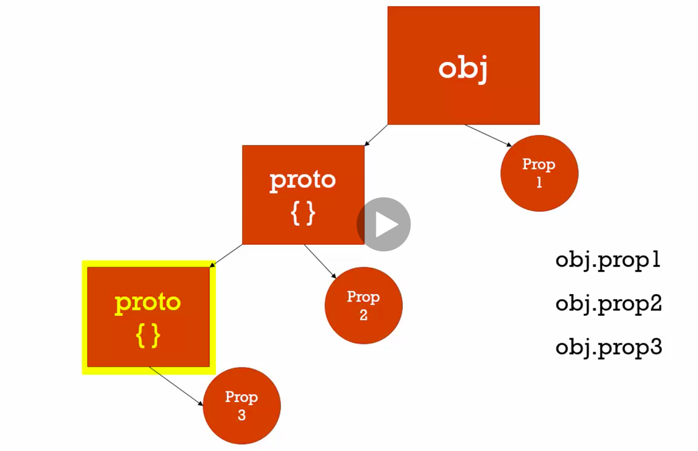
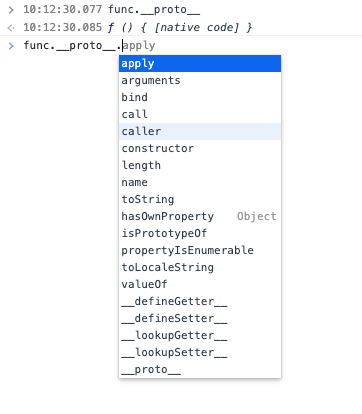

Syntax parser
A program that reads js code and translates it to computer readable language.
Lexical Environment
Where something sits physically in the code you write.
Lexical Environment exists in which where you write something is important.
It basically tells where is it written and what surrounds it.
For example:
var b = "b";
function abc(){
var a = 'a';
}
Here variable b is globally available but variable a is available only inside function
abc
that is lexical scope of variable b
Execution context
A wrapper to help manage the code that is running.
There are lot of lexical environments but which one is running currently is managed by Execution
code.
It not only contains our code but it also contains things written by syntax parser to run code.
Objects
Collection of name value pairs
let address = {
street : 'Main',
apartment : {
floor : 2,
number : 100
}
};
Here address, street, apartment, floor and number are all name and respective to right their values.
Value can itself be another object.
All primitive types are poperties of object, whereas function in an object is called method.
OOP
When we write our code using objects to represent entities, that’s called object-oriented programming, in
short: “OOP”.
const obj = {
name : 'Khushbu',
sureName : 'Thakur'
};
function welcomeUser(){
alert(`Hi there! Welcome to corona world.`);
}
obj.welcomeUser = welcomeUser;
obj.welcomeUser();
Execution context - GLOBAL
Javascript engine creates Global Object and variable this (setup in memory) whenever our code
runs because code
in wrapped inside execution context
Hoisting
Javascript engine moves functions and variables to the top of the code
E.g.
b();
console.log(a);
var a = "a val";
function b(){
console.log('b function called');
}
//output
-> b function called
-> undefined
here a and b both are called before they are declared. but still there is no error in console because
they are moved to the top
There are two phases which happen during execution;
-
1. Creation phases
-
2. Execution phase
- 1. During creation phase -> global object is setup within memory.
- 2. Parser recognizes where we have created variables and functions.
- 3. Set asides memory space for them
- 4. Function is entirely placed in memory i.e. both function and logic inside it
- 5. Whereas in case of variables it only sets memory space and sets value as undefined as it don't
know what's it value will be until it is executed
i.e. it assigns undefined placeholder for it
All variables in javascript are initially set to undefined and functions are sitting in memory
entirely.
if we use let instead of var then it will throw error instead of showing undefined and will say
------------ Cannot access 'a' before initialization ---------
Single threaded - synchronous execution
Single threaded : One command is executed at a time.
synchronous : one at a time and in order that it appears.
Invocation
Running a function { by using paranthesis() }. So when we say invoke the function we mean to say run the
function.
So whenever we invoke a function a new execution context is created and put on the top of the stack. The
execution context on the top is always executed currently.
When function is executed it gets poped out from the stack.
Scope Chain

If we call same function twice, each will get it's own execution context.
Scope
Where a variable is available in the code.
let is block scope. It is only available inside the current function.
function a(){
let b = true;
var c = false;
}
let is same as var. It is declared, set to undefined and stored in the memory. However we can't
use it until the line of code is actually run
In above example if we call b variable before it's declaration, it throws reference error.
Variable c is available outside function a but variable b is not available as it is declared
using let. And let is block scoped.
A block's in general defined by curly braces. Eg. if statement, for loop, function
for (let i = 0; i < 3; i++) {
setTimeout(() => {
// here everytime we will get a different variable in memory as let is block scoped
console.log(i)
}, 1);
}
/*
output
0
1
2
*/
for (var j = 0; j < 3; j++) {
setTimeout(() => {
// because of var j is defined only once,
and after that it's value just keeps on updating
console.log(j)
}, 1);
}
/*
output
3
3
3
*/
Asynchronous callback
Since JavaScript is synchronous, how is this handling those asynchronous events?
JS first executes all the tasks in it's global execution task, in between if we do some http request
or click event, it gets stacked in Event queue. When js's stack gets empty it
periodically looks into event queue and see if there is something. Then it runs all the items in event
queue synchronously.

Dynamic Typing
It figures out variable type on the fly.
Primitive Type
A type of data that holds single value. So object is primitive type as it holds key value pairs.
There are 6 primitive types:
- Undefined : Represents lack of existence. It is set by js engine sets variables to undefined
initially. (Leave this value for engine to set)
- Null: Represents lack of existence. Use this when we want to say somwthing does not exist or has
no value. (We i.e. code will use this value to indicate that this does not exist.)
- Boolean: True or false
- Number: Floating point number. Int,decimal all accepted in number.
- String: Sequence of characters in single '' of double "" quotes.
- Symbol: Once you create a symbol, its value is kept private and for internal use.
- BigInt
Operator
+ , - , * , / , >, <, etc
This are as good as function which returns some value based on function
name(operator)
Infix notation: The function name i.e. the operator sits between two parameters.
var a = 3 + 4;
function +(a,b){
// return addition of a and b
};
So for calling this we would have to write something like
+(3,4) without infix notation
3 + 4 -> infix notation (operator between two params)
+3 -> prefix notation (operator before param)
3+ -> postfix notation (operator after param)
This does not seem good. That's why all programming languages have infix notation.
Operator Precedence
It means which operator function gets called first. For example () will be given more priority over
* which in turn will be called before +
There's complete list of order od precedence. Click here
to view.
Get detailed explanation here.
var a = 3 + 4 * 5;
console.log(a);
// output -> 23
var b = (3 + 4) * 5;
console.log(b);
// output -> 35
Associativity
If all operators / functions are same then in what order will the be called, i.e. from left-to-right or
right-to-left.
For e.g. ..*.., ../.., ..%.. all have same precedence. In such case this will be called from left-to-right.
all have same precedence so called left to right
var c = 2 * 10 / 4;
console.log(c); // 5
var d = 2 / 10 * 4;
console.log(d); // 0.8
Click here
to view.
Get detailed explanation here.
Coercion
Converting a value from one type to another. Since JS is Dynamically typed this happens a lot in js.
var a = "1" + 2;
console.log(a); // 12
var b = 4 + "1" + 2;
console.log(b); // 412
var c = 3 + 5 + 9 + "2";
console.log(c); // 172
var d = '3' + 5 + 9 + "2";
console.log(d); // 3592
Objects and dot notation
An object can have:
1. primitive i.e. boolena, string, number
2. key value pairs ->
var a : { b : c { d : { e : 1}}};
3. methods (functions)
var a = {
read : function(){
console.log('read');
}
}
Bracket notation is also called computed member access -> it has highest precendence after ()
Dot notation is also called member access -> it has highest precendence after ()
Namespace
In modern coding, a namespace is a container for variables and functions. It's just a holder, a container.
And typically it's used to keep variables and functions with the same name separate.
For.eg.
var greet = 'Hello';
var greet = 'Hola';
consloe.log(greet); //Hola
var english = {
greetings : {
greet : 'Hello'
}
};
var spanish = {
greetings : {
greet : 'Hola'
}
};
consloe.log(english.greetings.greet); // Hello
consloe.log(spanish.greetings.greet); // Hola
Before the greet variable was overrided and this can cause error.
Since JS does not have namespace. So we created fake name space i.e.
container for each language.
I've contained my variables, maybe my functions and methods, and
other objects, inside a container object, and that's all it's really doing.
JavaScript Object Notation (JSON)
It is a string of data looks just like object literal syntaxt ({ "a" : 2}). All properties are wrapped in
quotes.
JSON is more strict. It requires you to put properties in quotes. And does not allow to put values as
functions inside it. It is used to pass from client in browser to server.
'{
"firstName" : "Khushbu",
"isPerson" : true
}'
{
firstName : "Khushbu",,
isPerson : true
}
Expressions
Anything that returns a value
1 + 3
// 3
Function is an object in js.
They are called first class functions. Because JS functions can be asigned to
variables, passed as an argument, returned from other function. They can even reside inside another object.
// assigned to variables
const getName = function(name){
console.log(name);
}
// passed as an argument
const logName = (name) =>{
name();
}
logName(function(){
console.log('some random name');
});
// returned from another function
function getFullName(firstName){
return function(lastName){
console.log(`${firstName} ${lastName}`);
}
}
getFullName('John')('Doe');
// can reside inside objects
const person = {
name : 'John Doe',
getName : () => this.name
};
Refer for examples
Anonymous Function
It is a function that does not have name in it's name property. E.g.
// anonymous function
var anonymousGreetFunction = function(){
console.log('Hi user!');
}
anonymousGreetFunction(); // Invocation
We cannot invoke anonymous function before it is declared, because functions are completely stores in memory
while hoisting but in case of variables they are stored in memory with undefined value. So if we call it
before it is executed we will get error.
Error : Cannot access 'anonymousGreetFunction' before initialization
Here function is not referenced by name but by a variable which knows where this function sit. As it has no
name it is called anonymous. This is function expression
Function expression
function log(a) {
a();
}
log(function () {
console.log('Hi from log function')
});
a function expression creates an object, a function object on the fly.
create function on fly, put some code in it and Pass it to another function which is then referenced by
argument and then execute it.
By value vs By Reference
All primitive types gets referenced by value. Whereas on case of non-primitives i.e. objects value gets
copied by reference.
All primitive types are by value and all objects are by reference.
// by value (primitive)
var a = 3;
var b;
b = a;
/* here both a and b are 3, but there are two copies in memomry with value 3,
so if we now change value of a it would not change value of b */
// by pointer - reference (non- primitive)
var c = { someVal : 1};
var d;
c = d;
// whereas here both c and d are pointing to same address in memory.
Refer value-vs-reference.js file for more details.
Mutate : Something which can be changed. To change something.
Immutable : Something which cannot be changed
THIS
This keyword usually refers to global object in browser. When execution context is created, a this
keyword is also created for it.
Refer for notes here
IIFE : Immediately Invoked Function Expression
Function is called as soon as it is created.
IIFE, it needs to be an anonymous function, a function without a name, this is because IIFE needs to be
Invoked Immediately without invoking it a function name. We also need to wrap the anonymous function with
parenthesis, so the Javascript parser treats our anonymous function as a function expression.
(function() {
console.log('hi from iife');
}());
A function expression is when you assign a function to a variable or property of an object. Anything that is
a Javascript expression, including function expression, returns a value.
Closures
function greet(whatToSay){
return function(name){
console.log(`${whatToSay} ${name}`);
}
}
greet('Hello')('Khushbu');
let greetings = greet('Namaste');
greetings('Chandler');
/*
output
Hello Khushbu
Namaste Chandler
*/
- We called greet function with paramter "Khushbu" / "Chandler".
- An exection context is created for greet function
- Memory space is created for whatToSay
- Now anonymous function is returned (which consoles 2 variables whatToSay & name)
- After this the the execution context of greet function is popped off the stack.
- So now -> greet('Hello') is replaced with function returned. To invoke this function we wrote
greet('Hello')('Khushbu'); / greetings('Chandler');
- The inner function does not have it's own whatToSay variable. So following scope chain it goes to
outer function.
- Javascript normally destorys all the variables defined inside function when it is popped out of context.
But in this cases like above the variable still lives.
- The inner function still can reference to the all the vairables it need.
- So our anonymous function call still reference to whatToSay variable.
- The JavaScript engine will always make sure that whatever function I'm running,
that it will have access to the variables that it's supposed to have access to.
Greet is gone, the execution context is gone.
But what's in memory for that execution context isn't and the
JavaScript engine makes sure that my function can still go down the scope chain and find it.
Even though it's not even on the execution stack anymore.
And this way we say that the execution context has closed in its outer variables,
the variables that it would normally have reference to anyway.
Even though those execution contexts are gone.
And so this phenomenon, of it closing in all the variables
that it's supposed to have access to, is called a closure.
Refer for exmaples
Closure is useful in hiding implementation detail in JavaScript. In other words, it can be useful to create
private variables or functions.
Definition: A JavaScript closure is when an inner function has access to its outer enclosing function's
variables and properties.
In other words, closure is created when a child function keep the environment of the parent scope even after
the parent function has already executed
All functions in javscript gets access to three methods : apply, bind and call.
Bind
Bind method : The bind() method creates a new function that, when called, has its this keyword set to the
provided value, with a given sequence of arguments preceding any provided when the new function is called.
let boundFunc = func.bind(thisArg[, arg1[, arg2[, ...argN]]])
Bind basically lets us control what a function's this will be.
Bind creates a copy of function
Below logName function's this was global object, by binding it to person object now it is person object.
const person = {
firstName : "Khushbu",
lastName : "Thakur",
fullName : function(){
return `${this.firstName} ${this.lastName}`
}
}
let logName = function(){
console.log(this.fullName());
}.bind(person);
logName();
// output : Khushbu Thakur
Refer this
Call
Calls a method of an object, substituting another object for the current object. Call does not create
copy
of the function but instead executes it.
let callFunc = func.call(thisArg[, arg1[, arg2[, ...argN]]])
const person = {
firstName: "Khushbu",
lastName: "Thakur",
fullName: function () {
return `${this.firstName} ${this.lastName}`
}
}
let logName = function (language) {
console.log(this.fullName());
console.log(language);
console.log('-----------');
};
logName.call(person, 'hindi');
Refer this
Apply
Calls the function, substituting the specified object for the this value of the function, and the specified
array for the arguments of the function. Apply does not create
copy
of the function but instead executes it.
Apply is same as call, the only difference is that it needs arguments in an array
let callFunc = func.call(thisArg, [ arg1, arg2, ...argN])
const person = {
firstName: "Khushbu",
lastName: "Thakur",
fullName: function () {
return `${this.firstName} ${this.lastName}`
}
}
let logName = function (language) {
console.log(this.fullName());
console.log(language);
console.log('-----------');
};
logName.apply(person, ['marathi']);
Refer this
Currying
Take a function, create copy of it and bind it with some default values. It is called currying.
Function currying: creating a copy of a function but with some preset parameters.
const multiply = function (a, b) {
return a * b;
}
console.log(multiply(2, 4)); // 8
// here new copy of multiply is created with default paramter value of a as 2;
// so when we will call multiplyByTwo, a will always be 2 and will pass value of b;
const multiplyByTwo = multiply.bind(this, 2);
// here 10 is value of b
console.log(multiplyByTwo(10)); //20
const multiplyByFour = multiply.bind(this, 4);
console.log(multiplyByFour(20));
// 80
/*
we created copy of multiply function
then set a default value
this is called currying
*/
Inheritance
One object gets access to properties and methods of another object.
Prototypes
In JavaScript objects ave a special hidden property [[Prototype]]. It is either null or references to other
object.
If we want some property from object and it is missing over there, then it automatically goes down the
prototype chain and finds it in [[Prototype]].
The prototype is a little bit “magical”. When we want to read a property from object, and it’s missing,
JavaScript automatically takes it from the prototype. In programming, such thing is called “prototypal
inheritance”.
The property [[Prototype]] is internal and hidden, but there are many ways to set it.
One of them is to use the special name __proto__

- We wanted prop1 from obj. Since obj has it we directly get from obj.
- We now want prop2 from obj. But obj does not have it, so it goes down to it's __proto__ and finds it
over there and returns if it has.
- Now __proto__ of obj can have another __proto__ too.
- So going from obj to __proto__ to __proto__ to find properties is called propotype chain.
- For prop3, obj goes to __proto__. It does not have it. So this __proto__ goes to its __proto__ and
returns it from there.
__proto__ is a historical getter/setter for [[Prototype]]
In below example when we look from some property or method in john or janice object, if it is missing over
there then it automatically inherits it from person object.
const person = {
firstName: 'default',
lastName: 'default',
getFullName() {
return `${this.firstName} ${this.lastName}`
}
};
console.log(person.getFullName());
// default default
// only for demo purpose, do not do this ever. Affects performance.
const john = {
firstName: 'John',
lastName: 'Doe',
};
// error john.getFullName is not a function
// console.log(john.getFullName());
/* since john does not have it's own getFullName property
we are trying to get it from person object.*/
john.__proto__ = person;
console.log(john.getFullName());
// John Doe
const janice = {
firstName: 'Janice'
};
janice.__proto__ = person;
console.log(janice.getFullName());
// Janice default
person is prototype of john and janice. john and janice prototypically inheitrs from person.
[[Prototype]] && __proto__
There can be only one [[Prototype]]. An object may not inherit from two others.
__proto__ can only be an object or null.
__proto__ references can't go in circles. For example above, as john's __proto__ referes to person. Person's
__proto__ can't again reference to john.
Methods are shared across objects via prototype but not states. Refer below example.
const animals = {
name : 'animal',
walk() {
if (!this.isSleeping) {
return true
}
},
sleep() {
return this.isSleeping = true
}
}
const rabbit = {
name: 'Rabbie',
__proto__: animals,
};
const snake = {
name: 'snaky',
__proto__: animals
}
// modifies isSleeping only in rabit object
rabbit.sleep();
console.log(rabbit.isSleeping); // true
console.log(animals.isSleeping); // undefined (no such property in the prototype)
console.log(snake.isSleeping); // undefined (no such property in the prototype)
// this is in prototype always refers to the object before dot.
console.log(snake.name);
No matter where the method is found: in an object or its prototype. In a method call, this is always the
object before the dot.
snake.name uses snake as this and not animals
Refer for more details
Everything in JavaScript that is not primitve type is an object and has __proto__.
Object is the base prototype
Every non-primitive have prototype except the base object.
Array, function and objects all have __proto__
__proto__ of object :
__proto__ of array :
__proto__ of __proto__ of an array or function is base object __proto__.
__proto__ of function :

__proto__ of __proto__ of a function is base object __proto__.